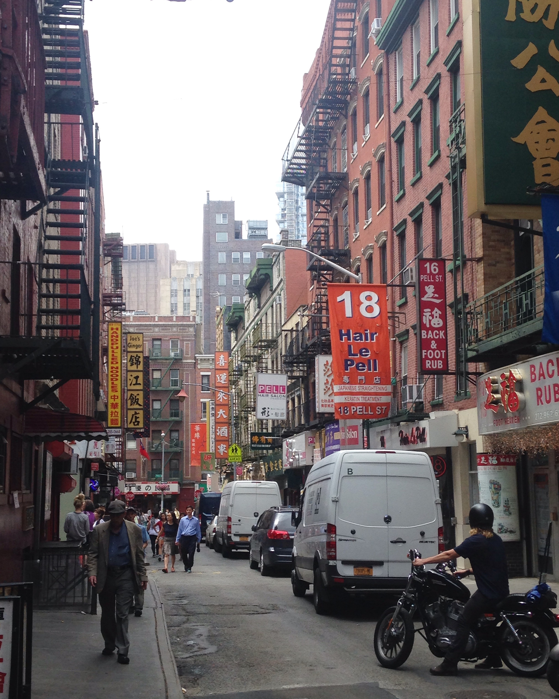

Over my life, I have been able to travel quite a bit. Here are the East Coast Cities I have visted. Here are the places I visited in chronological order - 1. is the first city I visited in the East Coast:

Photo Credits: Grace Kunkel (2016)